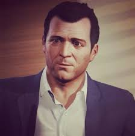

Персонажи GTA5


Grand Theft Auto V (сокр. GTA V) — мультиплатформенная компьютерная игра в жанре action-adventure с открытым миром, разработанная компанией Rockstar North и изданная компанией Rockstar Games. Изначально игра была выпущена для игровых консолей PlayStation 3 и Xbox 360 в 2013 году, в 2014 году переиздана для PlayStation 4 и Xbox One, а в 2015 году — для персональных компьютеров под управлением Windows. Является пятнадцатой по счёту игрой серии Grand Theft Auto и следующей крупной игрой после Grand Theft Auto IV, выпущенной в 2008 году. В России и СНГ издателем Grand Theft Auto V выступает компания 1С-СофтКлаб. Действие игры происходит в вымышленном штате Сан-Андреас, прообразом которого послужила Южная Калифорния. Сюжет в однопользовательском режиме строится вокруг приключений троих грабителей, устраивающих всё более дерзкие ограбления и противостоящих как организованной преступности, так и правоохранительным ведомствам. В процессе игры игрок управляет выбранным персонажем в режиме от первого или от третьего лица; персонаж может свободно передвигаться по обширному миру игры как пешком, так и на автомобилях и других видах транспорта. Особенностью Grand Theft Auto V по сравнению с другими играми серии является возможность переключаться между персонажами в любой момент, как во время выполнения заданий, так и вне их. Многие задания игры связаны с ограблениями и угоном автомобилей; при этом игровой персонаж может участвовать в перестрелках и погонях. Grand Theft Auto Online представляет собой встроенный многопользовательский онлайн-режим, поддерживающий до 30 игроков одновременно — для них предлагаются как кооперативные, так и соревновательные задания. Разработчики из Rockstar Games заявили, что на момент выхода GTA V является их самым большим и амбициозным проектом с крупнейшим созданным ими открытым игровым миром. GTA V является не только самой дорогостоящей по затратам на разработку и маркетинг игрой в истории, но и одной из самых популярных — на 2018 год её совокупные продажи на всех платформах превышают 95 миллионов копий, уступая лишь продажам Tetris и Minecraft. В свежем квартальном отчете за 2020 год Take-Two Interactive поделилась данными, что за все время продаж игры ее тираж составил 130 млн. копий Take-Two Interactive за второй квартальный отчет отчиталась за 135 млн. проданных копий игры.
|
Персонажи GTA5
|
|||
| Имя героя | Майкл Де Санта | Франклин Клинтон | Тревор Филипс |
|  | |
|
|
| Чуть больше о герое | переход | переход | переход |
Первым показанным протагонистом стал Майкл (Michael), значимость которого оценили ещё в первом трейлере. Он оказался вовсе не Альбертом и не испанцем, как предполагалось раньше. Майкл - бывший грабитель банков, который решил завязать и сдал своих подельников. В отличие от всех предыдущих героев, он - семьянин, который имеет двоих детей, с женой разведён, пусть и живут (Rockford Hills) вчетвером под одной крышей. (К слову, на одном из скриншотов, представленных на E3 2013 у героя на пальце появляется кольцо, что может значит одно - с женой, скорее всего, сошлись). Майкл приехал в Лос Сантос в поисках убежища от прошлой жизни и ради того, чтобы наладить отношения в семьи. Впрочем, ничего не складывается, и Майкл возвращается к прежней жизни расхитителя, а параллельно ходит на приёмы к костоправу, ведь помимо семейных проблем у него случаются приступы гнева. Тревор Филлипс (Trevor Phillips) - давний друг Майкла, бывший пилот, нынешний наркоман и алкоголик, холостяк. Он живёт в пригороде (Sandy Shores), ездит на джипе, а в его трейлере находится нарколаборатория. Сам Тревор не уравновешенный и агрессивный тип, любящий чёрный юмор и дайвинг. Если Майкл и Тревор представляют примерно одну возрастную категорию, то третий протагонист по имени Франклин (Franklin) - самый молодой, с виду лет 25. Чернокожий выходец из гетто Южного Лос Сантоса ухватывается за любую возможность заработать, занимаясь всем от промысла карманника до серьёзных авантюр. Насколько известно, Франклин является членом зелёной банды Groove, той самой, предводителями которых были братья Джонсоны из GTA: San Andreas. У парня есть ротвейлер Chop, наличие которого явно скажется на геймплее игры.